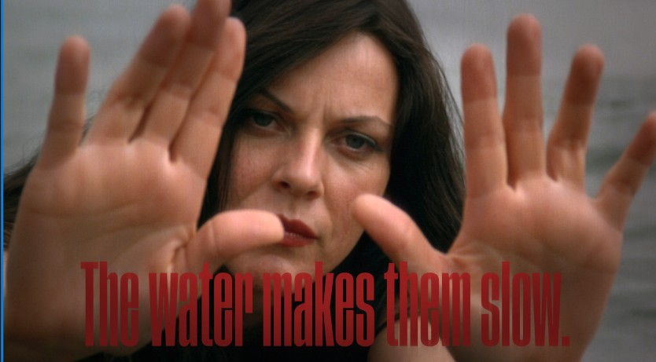
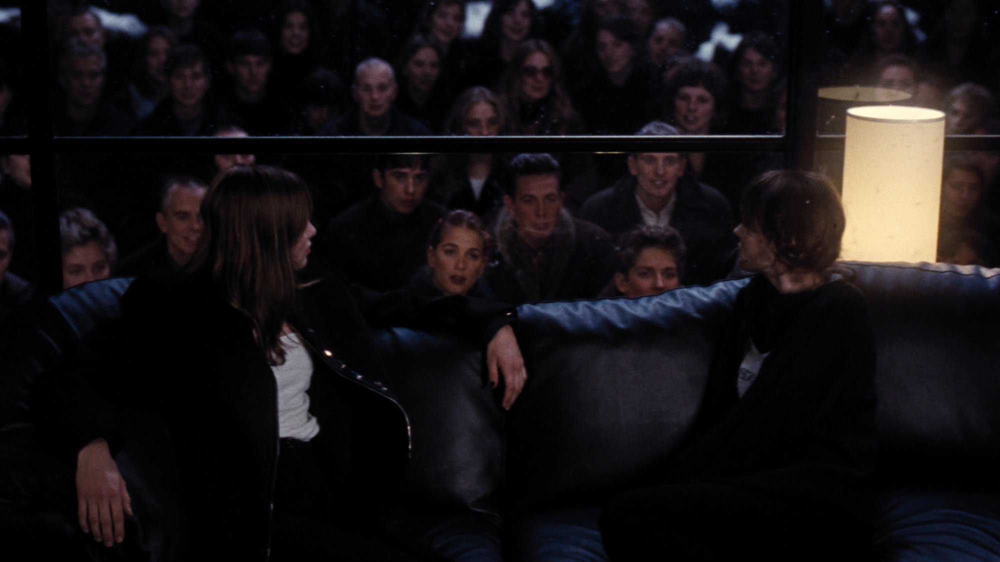
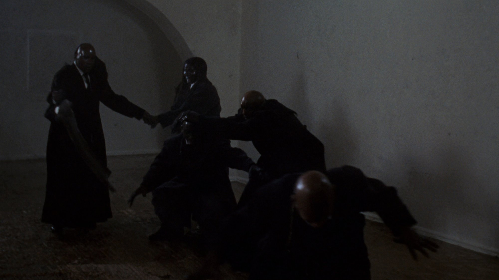
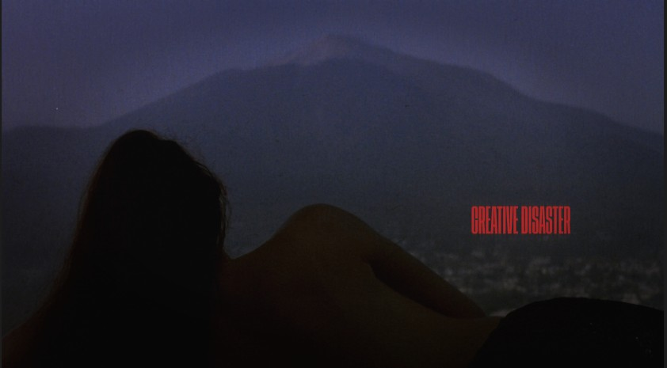
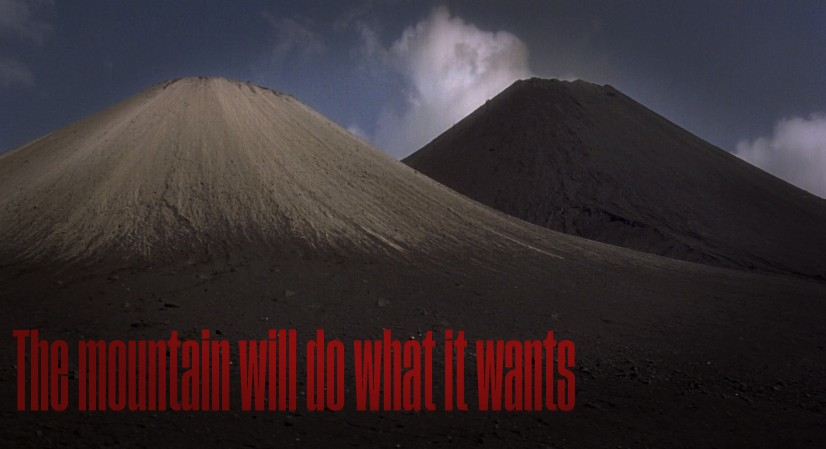
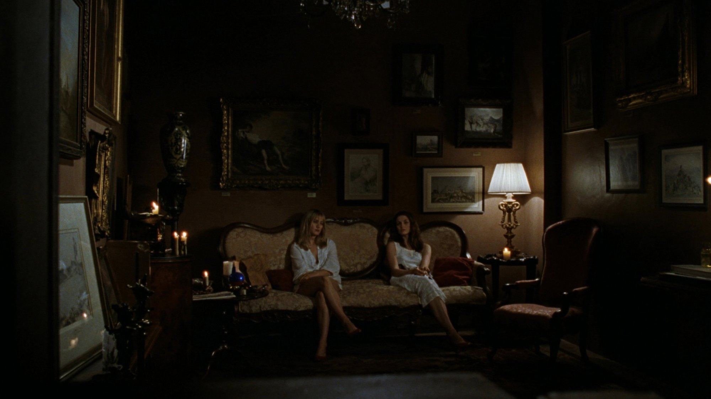
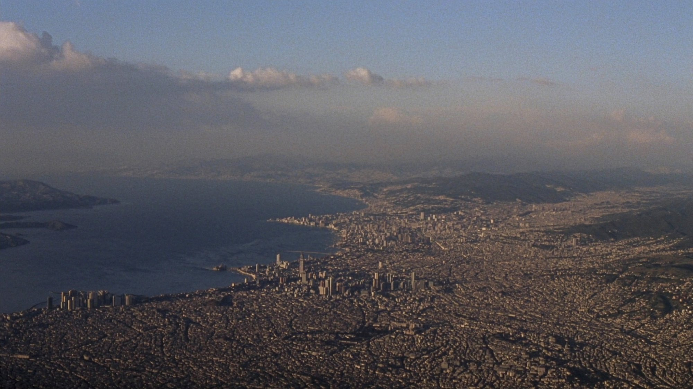
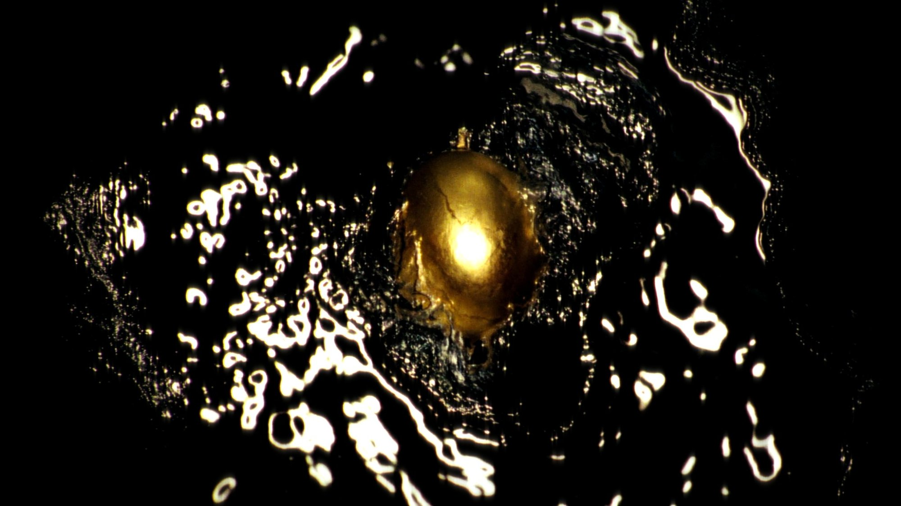
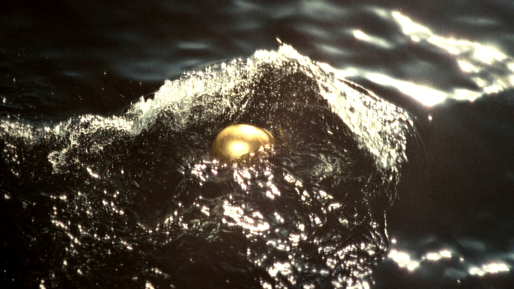
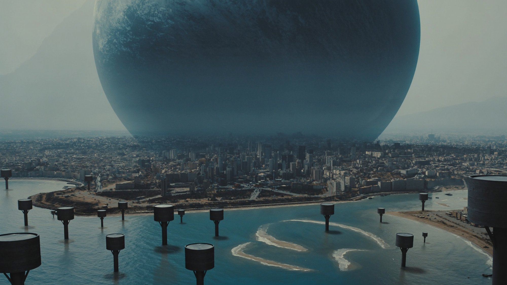

A city born on the pain of a woman who could not win
This is not a website. This is a gallery.

She died because he didn't look. Not tragedy. Wounded vanity.

The glass between seeing and being seen is thinner than you think.

A siren who dies
not from rejection
but from being ignored.



Every building a scar. Every street a nerve ending.


Beneath Castel dell'Ovo, Virgil placed an egg.
Not a miracle. An awareness. The moment you realize you can choose.
Partenope died wanting to be seen. The egg doesn't need to be seen. It holds.

You are not Ulysses.

Studio Starman — April 2026
Concept & Direction — Antonio Lazzaro
Naples is not a place.
It's a wound that learned to sing.